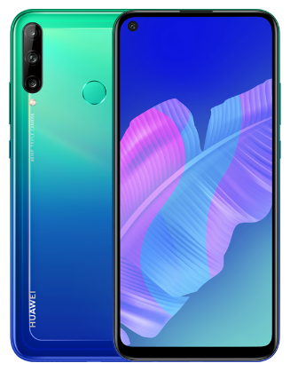

Huawei P40 lite E с NFC (ярко-голубой)
Краткое описание товара
Android, экран 6.39" IPS (720x1560), HiSilicon Kirin 710, ОЗУ 4 ГБ, флэш-память 64 ГБ, карты памяти, камера 48 Мп, аккумулятор 4000 мАч, 2 SIM
Подробное описание товара
Смартфон HUAWEI P40 lite E с эффектом 2.5D и светоотражением на задней панели. С безрамочным экраном 6.39 дюйма со встроенной фронтальной камерой предоставляет широкий обзор с соотношением экрана к передней панели 90.15%. Вырез в верхней части экрана идеально совпадает с объективом фронтальной камеры. Дизайн позволяет уменьшить размер диафрагмы и убрать лишние компоненты с экрана, обеспечивая широкий обзор. Благодаря технологии стабилизации на базе искусственного интеллекта и длинной выдержке в 6 секунд может делать четкие и детальные снимки даже в условиях недостаточного освещения. Оснащен тройной камерой с поддержкой искусственного интеллекта. Основной объектив камеры 48 МП, ультраширокоугольный объектив 8 МП и объектив для измерения глубины резкости 2 МП позволяют детально запечатлеть кадр. Интеллектуальная технология распознавания сценариев на базе искусственного интеллекта может автоматически определять более 500 сценариев и 21 категорию в режиме реального времени и в соответствии с ними настраивать параметры камеры. Движок, разработанный HUAWEI, оптимизирует и ускоряет работу системы, исключая любые задержки. Встроенный аккумулятор емкостью 4000 мА*ч обеспечивает 22 часа воспроизведения видео, 111 часов прослушивания музыки и 20 часов просмотра веб-страниц. С внутренней памятью 64 ГБ и поддержкой карты памяти до 512 ГБ позволит хранить все важные фотографии, видео и приложения. Интерфейс EMUI 9.1 обеспечивает комфортный опыт использования смартфона. Файловая система EROFS повышает скорость произвольного чтения на 20% и предоставляет дополнительное место для хранения 1000 фотографий или 500 музыкальных композиций. Способен автоматически распознавать 28012 видов тегов без подключения к сети Интернет. Достаточно открыть Галерею и начать поиск по тегам. Например, по тегу «Люди» автоматически отобразятся все фото, на которых они присутствуют. Теперь вы можете установить любимое видео на звонок ваших друзей.
Характеристики товара
Общая информация |
|
Основные |
|
Процессор |
|
Конструкция |
|
Размеры и вес |
|
Экран |
|
Основная камера |
|
Фронтальная камера |
|
Функции |
|
Датчики |
|
Навигация |
|
Передача данных |
|
Интерфейсы |
|
Аккумулятор и время работы |
|
Комплектация |
|